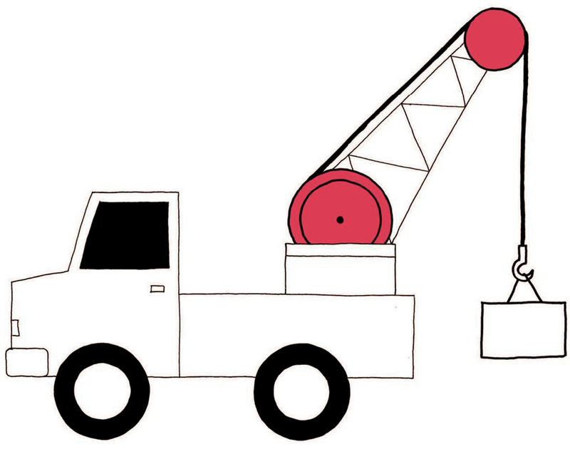
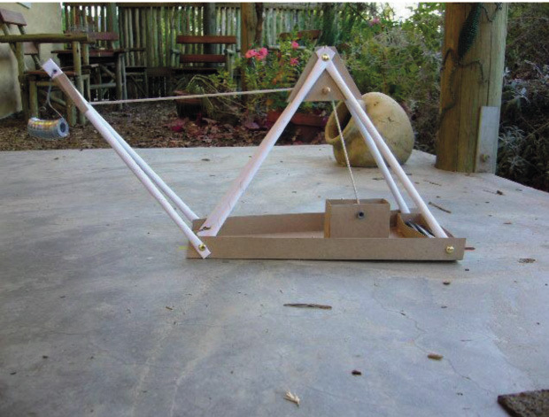
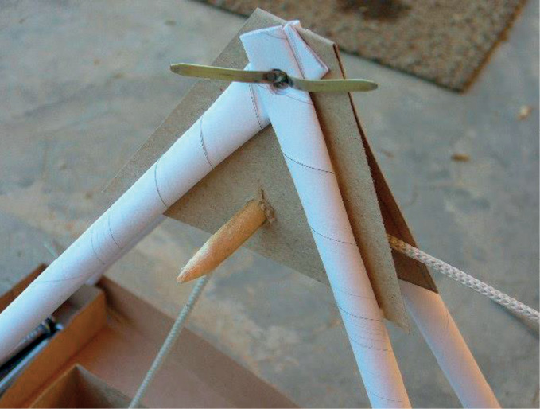
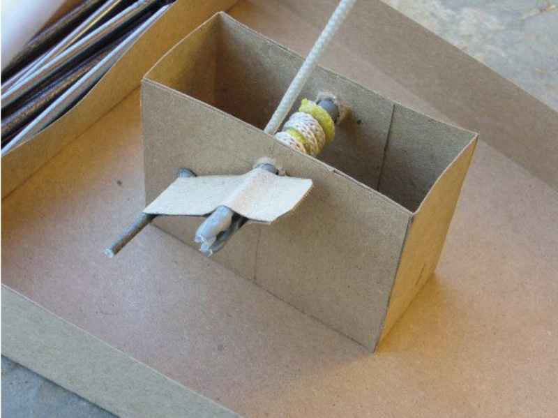

<div class="container">
  <div id="contents" class="col-md-12 main-content"><h1 xmlns="http://www.w3.org/1999/xhtml" id="toc-id-16">Bou ’n model hyskraan</h1>
    <p xmlns="http://www.w3.org/1999/xhtml" class="x--Body-opener">Vir hierdie kwartaal se mini-PAT gaan jy op jou eie werk en ook as deel van ’n groep werk om ’n
hyskraan te bou wat gebruik kan word om stukke metaal op te tel. Jy gaan deur al die fases van die
ontwerp proses werk terwyl jy die model hyskraan met ’n elektromagneet, bou. Jy gaan op elke fase
van die ontwerp proses geassesseer word.</p>

     <figure xmlns="http://www.w3.org/1999/xhtml">
    <p class="x--caption"><span></span> </p>
<figcaption>
    <p class="x--caption para-style-override-13">Figuur 1</p>
</figcaption></figure>
<figure xmlns="http://www.w3.org/1999/xhtml">    <p class="x--caption"><span></span> </p>
<figcaption>
    <p class="x--caption para-style-override-13">Figuur 2</p>
</figcaption></figure>
    <h2 xmlns="http://www.w3.org/1999/xhtml" id="toc-id-17">Week 1</h2>

    <h3 xmlns="http://www.w3.org/1999/xhtml">Ontwerp deel 1 (30 minute)</h3>

    <p xmlns="http://www.w3.org/1999/xhtml" class="x--Body-story"><i>’n Skrootwerfhandelaar sorteer magnetiese en nie-magnetiese metale in aparte
hope vir herwinning. Hy gebruik ’n hyskraan met ’n magneet, maar vind dit
moeilik om die metale van die magneet af te kry. Hy benodig ’n magneet wat
aan- en afgeskakel kan word om hom hiermee te help.
</i></p>

    <p xmlns="http://www.w3.org/1999/xhtml" class="x--Body-Text">Die besigheid wil hê dat jy ’n model hyskraan ontwerp en bou wat:</p>

    <ul xmlns="http://www.w3.org/1999/xhtml">   
    <li class="x--Body-text-bullet">  ’n eenvoudige raamstruktuur is,
</li>
<li class="x--Body-text-bullet">sterk, stewig en versterk moet wees deur gebruik te maak van triangulasie,
</li>

      <li class="x--Body-text-bullet"> met ’n katrol en ’n krukarm meganisme werk,
</li>

      <li class="x--Body-text-bullet">draai, of die hyskraanarm kan oplig en afsak,
</li>

      <li class="x--Body-text-bullet"> van enige materiaal gemaak kan word. Sommige materiaal kan gekoop word,
terwyl ander materiaal eenvoudig kan wees, soos papierspykers of olifantgras.
</li>
    </ul>
    <p xmlns="http://www.w3.org/1999/xhtml" class="x--Body--above">Die hyskraan moet ’n elektromagneet aan die kraanarm vasgeheg hê. Die
elektromagneet:</p>

    <ul xmlns="http://www.w3.org/1999/xhtml"><li class="x--Body-text-bullet">  moet ’n sagte yster kern hê wat gemaak is van ’n bondel kort lengtes ysterdraad,
</li>

      <li class="x--Body-text-bullet">moet ’n skakelaar hê sodat dit aan- en afgeskakel kan word,
 
</li>

      <li class="x--Body-text-bullet">  moet sterk genoeg wees om verskeie skuifspelde, spykers of muntstukke te kan optel.
</li>
    </ul> 
    <h3 xmlns="http://www.w3.org/1999/xhtml">Ontwerpopdrag met spesifikasies en beperkings</h3>

    <p xmlns="http://www.w3.org/1999/xhtml" class="x--Body-Text">Werk op jou eie. Hierdie taak gaan geassesseer word. Lees deur die inligting
wat gegee is onder die opskrif “Ontwerp Deel 1”, voordat jy die drie stelle vrae
beantwoord.</p>

    <p xmlns="http://www.w3.org/1999/xhtml" class="x--Body--above">Vra jouself:</p>

    <ul xmlns="http://www.w3.org/1999/xhtml"><li class="x--Body-text-bullet"> Wat is die probleem?
</li>

      <li class="x--Body-text-bullet"> Vir wie is die oplossing? Of andersins, wie sal baat vind uit die oplossing?
</li>

      <li class="x--Body-text-bullet"> Wat behoort die oplossing te doen?
</li>

      <li class="x--Body-text-bullet para-style-override-9">
       Sal dit die gemeenskap bevoordeel of benadeel?
</li>
    </ul><p xmlns="http://www.w3.org/1999/xhtml" class="x--Body-investigation-hanging para-style-override-9">
    1. Skryf nou ’n ontwerpopdrag. Gebruik die antwoorde van die vrae wat jy pas
beantwoord het om jou te help.</p>
     <hr xmlns="http://www.w3.org/1999/xhtml"/><p xmlns="http://www.w3.org/1999/xhtml" class="x--Body-investigation-hanging">2. Identifiseer die spesifikasies.</p>

    <p xmlns="http://www.w3.org/1999/xhtml" class="x--Body-investigation-hanging-a-">(a) Lys die spesifikasies vir die model hyskraan.</p>
     <hr xmlns="http://www.w3.org/1999/xhtml"/><p xmlns="http://www.w3.org/1999/xhtml" class="x--Body-investigation-hanging-a-">(b) Lys die spesifikasies vir die elektromagneet.</p>
     <hr xmlns="http://www.w3.org/1999/xhtml"/><p xmlns="http://www.w3.org/1999/xhtml" class="x--Body-investigation-hanging">3. Identifiseer die beperkinge, indien daar enige is.</p>
     <hr xmlns="http://www.w3.org/1999/xhtml"/>

     
    <h3 xmlns="http://www.w3.org/1999/xhtml">Ondersoek hyskrane (30 minute)</h3>

    <p xmlns="http://www.w3.org/1999/xhtml"><b>Identifiseer krukarms en katrolle
</b></p>

    <p xmlns="http://www.w3.org/1999/xhtml" class="x--Body-Text">Werk op jou eie. Hierdie taak sal geassesseer word.</p>

    <p xmlns="http://www.w3.org/1999/xhtml" class="x--Body-investigation-hanging">1. Bestudeer al vier prente van hyskrane op die volgende bladsye. Elke hyskraan
het ’n krukarm-en-katrol-sisteem. Sommige hyskrane het meer as een katrol.
Soos in hoofstuk 4 genoem, is ’n krukarm ’n hefboom wat gebruik word om ’n
as te laat draai.</p>

    <p xmlns="http://www.w3.org/1999/xhtml" class="x--Body-investigation-hanging">2. Kyk mooi waar die krukke geplaas is en merk elke krukarm met die letter H (’n
krukarm is ’n hefboom vir rotasiebeweging).</p>

    <p xmlns="http://www.w3.org/1999/xhtml" class="x--Body-investigation-hanging">3. Kyk waar die katrolle geplaas is en merk elke katrol met die letter K.</p>

    <p xmlns="http://www.w3.org/1999/xhtml" class="x--Body-investigation-hanging">4. Watter van die hyskrane het katrolsisteme met drie of meer katrolle?</p>
    <hr xmlns="http://www.w3.org/1999/xhtml"/><figure xmlns="http://www.w3.org/1999/xhtml">
      <div class="frame-4"></div>
    <figcaption>

    <p class="T-Title-chapter-name"><span class="chapter-no char-style-override-8">Figuur 3: ’n Hyskraan by ’n hawe
</span></p>
</figcaption></figure>
    <figure xmlns="http://www.w3.org/1999/xhtml">
      <div class="frame-4"></div>
    <figcaption>

    <p class="x--caption">Figuur 4:’n Hoë bouershyskraan</p>
</figcaption></figure>
    <figure xmlns="http://www.w3.org/1999/xhtml">
      <div class="frame-4"></div>
    <figcaption>

    <p class="x--caption">Figuur 5: n Hyskraan op ’n trok</p>

    </figcaption></figure><figure xmlns="http://www.w3.org/1999/xhtml">
      <div class="frame-4"></div>
    <figcaption>

    <p class="x--caption">Figuur 6: ’n Hyskraan op ’n ruspe(r)bandtrekker

</p>
</figcaption></figure>


   
    <h3 xmlns="http://www.w3.org/1999/xhtml">Kyk na hierdie model hyskraan</h3>

    <p xmlns="http://www.w3.org/1999/xhtml" class="x--Body-Text">Werk in pare. Die foto’s op die volgende paar bladsye wys die stappe om ’n model
hyskraan te maak. Beantwoord die vrae wat volg na die reeks foto’s.</p>
<figure xmlns="http://www.w3.org/1999/xhtml">
    <p class="Normal"><span></span> </p>
<figcaption>
    <p class="x--caption">Figuur 7</p>
</figcaption></figure><figure xmlns="http://www.w3.org/1999/xhtml">
    <p class="x--caption"><span></span> </p>
<figcaption>
    <p class="x--caption">Figuur 8</p>
</figcaption></figure>
    <figure xmlns="http://www.w3.org/1999/xhtml">
      <div class="frame-4"></div>
   
<figcaption>
    <p class="x--caption">Figuur 9</p>
</figcaption></figure><figure xmlns="http://www.w3.org/1999/xhtml">
    <p class="x--Body-Text"><span></span></p><figcaption><p><span class="char-style-override-8">Figuur 10</span></p>
</figcaption></figure><figure xmlns="http://www.w3.org/1999/xhtml">
    <p class="x--Body-Text"><span></span> </p>
<figcaption>
    <p class="x--caption">Figuur 11</p>
</figcaption></figure><figure xmlns="http://www.w3.org/1999/xhtml">
    <p class="x--caption"><span></span> </p>
<figcaption>
    <p class="x--caption">Figuur 12</p>
</figcaption></figure><figure xmlns="http://www.w3.org/1999/xhtml">
    <p class="x--Body-Text"><span></span> </p>
<figcaption>
    <p class="x--caption">Figuur 13</p>
</figcaption></figure><figure xmlns="http://www.w3.org/1999/xhtml">
    <p class="x--Body-Text"><span></span></p>
 <figcaption>   <p><span class="char-style-override-8">Figuur 14</span></p>
</figcaption></figure><figure xmlns="http://www.w3.org/1999/xhtml">
    <p class="x--caption"><span></span> </p>
<figcaption>
    <p class="x--caption">Figuur 15</p>
</figcaption></figure><figure xmlns="http://www.w3.org/1999/xhtml">
    <p class="x--Body-Text"><span></span> </p>
<figcaption>    <p class="x--caption">Figuur 16</p>
</figcaption></figure>
    <p xmlns="http://www.w3.org/1999/xhtml" class="x--Body-investigation-hanging">1. Die raam van die model hyskraan in die foto’s, is gebou met papierspykers wat
in driehoeke gebuig is (sien figuur 8). Hoeveel driehoeke is gebruik?</p>
    <hr xmlns="http://www.w3.org/1999/xhtml"/><p xmlns="http://www.w3.org/1999/xhtml" class="x--Body-investigation-hanging">2. Merk die driehoeke in figuur 9. Begin hulle nommer by 1.</p>
    <hr xmlns="http://www.w3.org/1999/xhtml"/><p xmlns="http://www.w3.org/1999/xhtml" class="x--Body-investigation-hanging">3. Lys die materiaal wat gebruik is om die hyskraan te bou.</p>
    <hr xmlns="http://www.w3.org/1999/xhtml"/><p xmlns="http://www.w3.org/1999/xhtml" class="x--Body-investigation-hanging">4. Identifiseer die materiaal en die metode wat gebruik is om die verbindings/skarniere van hierdie model te maak.</p>
    <hr xmlns="http://www.w3.org/1999/xhtml"/><p xmlns="http://www.w3.org/1999/xhtml" class="x--Body-investigation-hanging">5. Kyk na figure 11, 12, 13 en 14. Kyk na hoe die katrol gemaak is. Lys die materiaal
wat gebruik is om die katrol te maak.</p>
    <hr xmlns="http://www.w3.org/1999/xhtml"/><p xmlns="http://www.w3.org/1999/xhtml" class="x--Body-investigation-hanging">6. Kyk na figuur 14. Kyk hoe die krukarm gemaak is. Lys die materiaal wat gebruik
is om die krukarm te maak.</p>
    <hr xmlns="http://www.w3.org/1999/xhtml"/><p xmlns="http://www.w3.org/1999/xhtml" class="x--Body-investigation-hanging">7. Let op waar en hoe die gewig aan die end van die katrol geplaas is. Verduidelik
wat jy sien.</p>
    <hr xmlns="http://www.w3.org/1999/xhtml"/><p xmlns="http://www.w3.org/1999/xhtml" class="x--Body-investigation-hanging">8. Wat is die doel van die boks spykers aan die agterkant van die hyskraan?</p>
     <hr xmlns="http://www.w3.org/1999/xhtml"/>

    <h3 xmlns="http://www.w3.org/1999/xhtml">Skets en perspektief tekening (60 minute)</h3>

    <p xmlns="http://www.w3.org/1999/xhtml"><b>Skets jou idees
</b></p>

    <p xmlns="http://www.w3.org/1999/xhtml" class="x--Body-investigation-hanging">1.  Lees weer deur die spesifikasies vir jou model hyskraan. Onthou dat jy
materiaal moet gebruik wat gepas is om ’n raamstruktuur te bou.</p>

    <p xmlns="http://www.w3.org/1999/xhtml" class="x--Body-investigation-hanging">2. Dink aan twee verskillende ontwerpe.</p>

    <p xmlns="http://www.w3.org/1999/xhtml" class="x--Body-investigation-hanging">3. Skets een van jou ontwerpe op die volgende bladsy. Voeg byskrifte by die
verskillende dele van die hyskraan en ook by die materiaal wat jy gaan gebruik. Hierdie skets gaan geassesseer word.

</p>

    <p xmlns="http://www.w3.org/1999/xhtml" class="x--Body-investigation-hanging para-style-override-4">
    Gebruik die kontrolelys om seker te maak dat jy alles ingesluit het.</p>

    <table xmlns="http://www.w3.org/1999/xhtml" id="table-15" class="No-Table-Style"><tbody><tr class="Row-Column-7"><td class="cell-style-override-1">
            <p class="x--Body-Text"><span class="Body-bold"><b>Dinge om na op te let
</b></span></p>
          </td>

          <td class="cell-style-override-1"/>
        </tr><tr class="Row-Column-7"><td class="cell-style-override-1">
            <p class="x--Body-Text">Het jou tekening ’n opskrif?</p>
          </td>

          <td class="cell-style-override-1"/>
        </tr><tr class="Row-Column-7"><td class="cell-style-override-1">
            <p class="x--Body-Text">Het jy die verskillende onderdele met byskrifte gemerk?</p>
          </td>

          <td class="cell-style-override-1"/>
        </tr><tr class="Row-Column-7"><td class="cell-style-override-1">
            <p class="x--Body-Text">Het jy aangedui watter materiaal jy gaan gebruik?</p>
          </td>

          <td class="cell-style-override-1"/>
        </tr></tbody></table><p xmlns="http://www.w3.org/1999/xhtml" class="x--Body-investigation-hanging">Jou onderwyser gaan jou skets assesseer deur die volgende skaal van 3 tot 1 te
gebruik:</p>

    <p xmlns="http://www.w3.org/1999/xhtml" class="x--Body-investigation-hanging"><b>3:</b> Goeie werk, <b>2:</b> Bevredigende werk, <b>1:</b> Swak werk</p>

    <p xmlns="http://www.w3.org/1999/xhtml" class="x--Body-investigation-hanging">4. Teken jou ander ontwerp in enkel verdwynpunt perspektief. Jou tekening hoef
nie volgens skaal te wees nie. Gebruik die kontrolelys om seker te maak dat jy
alles ingesluit het. Hierdie tekening gaan nie geassesseer word nie.</p>

    <table xmlns="http://www.w3.org/1999/xhtml" id="table-16" class="No-Table-Style"><tbody><tr class="Row-Column-7"><td class="cell-style-override-1">
            <p class="x--Body-Text"><b>Dinge om na op te let</b></p>
          </td>

          <td class="cell-style-override-1"/>
        </tr><tr class="Row-Column-7"><td class="cell-style-override-1">
            <p class="x--Body-Text">Het jou tekening ’n opskrif?</p>
          </td>

          <td class="cell-style-override-1"/>
        </tr><tr class="Row-Column-7"><td class="cell-style-override-1">
            <p class="x--Body-Text">Het jy die verdwynpunt gemerk?</p>
          </td>

          <td class="cell-style-override-1"/>
        </tr><tr class="Row-Column-7"><td class="cell-style-override-1">
            <p class="x--Body-Text">Het jy die hyskraan se aansig geteken wat die meeste detail wys?</p>
          </td>

          <td class="cell-style-override-1"/>
        </tr><tr class="Row-Column-8"><td class="cell-style-override-1">
            <p class="x--Body-Text">Het jy ligte gidslyne van die hoeke van die vorm van die hyskraan na
die verdwynpunt getrek?</p>
          </td>

          <td class="cell-style-override-1"/>
        </tr><tr class="Row-Column-8"><td class="cell-style-override-1">
            <p class="x--Body-Text">Het jy horisontale en vertikale lyne getrek om die agterkant van die
hyskraan aan te dui?</p>
          </td>

          <td class="cell-style-override-1"/>
        </tr><tr class="Row-Column-7"><td class="cell-style-override-1">
            <p class="x--Body-Text">Het jy die ligte lyne donkerder gemaak om die buitelyne van die
hyskraan te wys?</p>
          </td>

          <td class="cell-style-override-1"/>
        </tr></tbody></table> <hr xmlns="http://www.w3.org/1999/xhtml"/><p xmlns="http://www.w3.org/1999/xhtml" class="x--Body-Text para-style-override-23">Skets een van jou ontwerpe hier:</p>

  
 

    <p xmlns="http://www.w3.org/1999/xhtml" class="x--Body-Text para-style-override-23">Skets jou ander ontwerp hier:</p>

 
 

   
    <h2 xmlns="http://www.w3.org/1999/xhtml" id="toc-id-18">Week 2</h2>

    <h3 xmlns="http://www.w3.org/1999/xhtml">Beplan om die hyskraan te maak (30 minute)</h3>

    <p xmlns="http://www.w3.org/1999/xhtml" class="x--Body-Text">Dit is nou tyd om vir die eintlike bou van die model hyskraan voor te berei. Werk in
groepe van drie of vier. Jy gaan die model as ’n span bou.</p>

    <p xmlns="http://www.w3.org/1999/xhtml"><b>Besluit wat en hoe jy dit gaan doen
</b></p>

    <p xmlns="http://www.w3.org/1999/xhtml" class="x--Body-indent">Werk as ’n span vir die eerste taak. Werk op jou eie vir take 2, 3 en 4. Hierdie take
gaan geassesseer word.</p>

    <p xmlns="http://www.w3.org/1999/xhtml" class="x--Body-investigation-hanging para-style-override-23">1. Kyk na al die ontwerpe. Elke lid van die groep sal twee ontwerpe voorstel.
Bespreek al die ontwerpe. Besluit watter ontwerp die span gaan bou. Jou groep
kan ook ’n nuwe ontwerp maak. Onthou wat jy laas kwartaal geleer het oor hoe
om ’n ooreenkoms te bereik wanneer daar op dinge besluit word. Indien jy ’n
nuwe ontwerp maak, moet een persoon ’n ontwerpskets maak van die nuwe
ontwerp. Gebruik die spasie hieronder vir hierdie nuwe tekening.</p>

 
    <p xmlns="http://www.w3.org/1999/xhtml" class="x--Body-investigation-hanging">2. Maak ’n lys van al die materiaal wat jy beplan om te gebruik vir die bou van jou
model.</p>
     <hr xmlns="http://www.w3.org/1999/xhtml"/><p xmlns="http://www.w3.org/1999/xhtml" class="x--Body-investigation-hanging">3. Maak ’n lys van al die gereedskap wat jy gaan gebruik om die model te bou,
byvoorbeeld, die gereedskap wat jy gaan gebruik om mee te meet en sny.</p>
    <hr xmlns="http://www.w3.org/1999/xhtml"/><p xmlns="http://www.w3.org/1999/xhtml" class="x--Body-investigation-hanging">4. Dink na oor jou eie veiligheid wanneer jy hierdie gereedskap gebruik. Sommige
gereedskap kan gevaarlik wees indien dit verkeerd gebruik word. Skryf een
veiligheidsreël neer vir een van die gereedskapstukke wat jy gaan gebruik.</p>
     <hr xmlns="http://www.w3.org/1999/xhtml"/> 
    <p xmlns="http://www.w3.org/1999/xhtml"><b>Volgorde van werk
</b></p>

    <p xmlns="http://www.w3.org/1999/xhtml" class="x--Body-indent">Jy gaan die stappe wat jy gaan volg om die model te bou in die vorm van ’n
“vloeikaart” voorstel. Vloeikaarte word ook soms vloeidiagramme genoem.</p>

    <ul xmlns="http://www.w3.org/1999/xhtml"><li class="x--Body-text-bullet">  Vloeikaarte is ontwerp om inligting makliker verstaanbaar te maak.
</li>

      <li class="x--Body-text-bullet"> Hulle is pret om te gebruik omdat jy kleur en prente, in plaas van woorde, kan
gebruik.
</li>

      <li class="x--Body-text-bullet">  Jy gaan ’n prosesvloeikaart maak. ’n Prosesvloeikaart wys die metode of proses
van maak, van die begin tot die einde. Daar is ook ander tipes vloeikaarte.
</li>
    </ul><b xmlns="http://www.w3.org/1999/xhtml">Hoe om ’n vloeikaart te maak
</b>

    <div xmlns="http://www.w3.org/1999/xhtml" class="note">
     <ul><li class="x--Body-text-bullet"> 
        Die eerste stap identifiseer die onderwerp of die
eerste stap van die proses.
</li>

        <li class="x--Body-text-bullet"> 
       Pyle wys die rigting van die proses, van die eerste
stap tot die einde. Volg die pyle om die proses in
die regte volgorde te lees. Hulle kan horisontaal
of vertikaal wees.
</li>

        <li class="x--Body-text-bullet"> 
        Die laaste vorm dui die laaste stap in die proses
aan.
</li>
      </ul></div>

    <figure xmlns="http://www.w3.org/1999/xhtml">
      <div class="frame-4"></div>

     
    <figcaption>

    <p class="x--caption para-style-override-9">Figuur 17: ’n Vloeidiagram vir die bou van ’n model hyskraan</p>
</figcaption></figure>
    <h3 xmlns="http://www.w3.org/1999/xhtml">Beplan om ’n elektromagneet te maak (30 minute)</h3>

    <p xmlns="http://www.w3.org/1999/xhtml" class="x--Body-Text">Jy het ’n elektromagneet in hoofstuk 3 gemaak. ’n Elektromagneet word gemaak uit:</p>

    <ul xmlns="http://www.w3.org/1999/xhtml"><li class="x--Body-text-bullet"> ’n kern wat ’n yster bout (vir ’n harde kern), of ’n bondel kort stukke ysterdraad
het (vir ’n sagte kern);
</li>

      <li class="x--Body-text-bullet">  ’n lang stuk geïsoleerde draad om rondom die kern te draai, en
</li>

      <li class="x--Body-text-bullet">  isolasieband om die komponente aanmekaar te hou.
</li>
    </ul><p xmlns="http://www.w3.org/1999/xhtml" class="x--Body--above">Die stroombaan vir die elektromagneet word gemaak van:</p>

    <ul xmlns="http://www.w3.org/1999/xhtml"><li class="x--Body-text-bullet">  ’n battery. Jy kan vier 1,5 V D-selle gebruik. Ons gebruik D-selle in stede van 1,5
V AA-selle (pen-flits batterye), omdat die D-selle meer materiaal bevat en dus
langer hou.
</li>

      <li class="x--Body-text-bullet"> ’n battery houer. Die selle moet in series verbind wees, die een agter die
ander, sodat hulle 6 V krag kan verskaf. Jy kan isolasieband gebruik om hulle
aanmekaar vas te plak.
</li>

      <li class="x--Body-text-bullet"> ’n skakelaar. Gebruik ’n skakelaar wat sal aanbly totdat jy dit wil afskakel. Jy kan
jou eie skakelaar maak of een koop.
</li>

      <li class="x--Body-text-bullet"> draad. Om die verskillende komponente aan mekaar te bind.
</li>
    </ul> 
    <h3 xmlns="http://www.w3.org/1999/xhtml">Beplan om ’n elektromagneet te maak</h3>

    <p xmlns="http://www.w3.org/1999/xhtml" class="x--Body-investigation-hanging--1-3-">1. Lys die materiaal wat jy gaan gebruik om die
elektromagneet te maak.</p><hr xmlns="http://www.w3.org/1999/xhtml"/>

    <div xmlns="http://www.w3.org/1999/xhtml" class="aside">
      <p class="x--Body-box-no-indent">Jy kan dun telefoondraad
gebruik in stede van
geïsoleerde koperdraad.
Omdat hierdie draad dun is,
kan dit meer kere om die
spyker gedraai word. Meer
omwentelings sal jou ’n sterker
magneet gee.</p>
    </div>
    <p xmlns="http://www.w3.org/1999/xhtml" class="x--Body-investigation-hanging">2.  Lys die gereedskap wat jy gaan gebruik om die elektromagneet en die
stroombaan te bou. Maak seker dat jy die regte gereedskap gebruik. Moet nie
draad met ’n skêr sny nie.</p>
    <hr xmlns="http://www.w3.org/1999/xhtml"/><p xmlns="http://www.w3.org/1999/xhtml" class="x--Body-investigation-hanging">3. Skryf ten minste een veiligheidsreël om te volg terwyl jy die elektromagneet maak.</p>
    <hr xmlns="http://www.w3.org/1999/xhtml"/><p xmlns="http://www.w3.org/1999/xhtml" class="x--Body-investigation-hanging">4. Teken ’n vloeikaart van die metode wat jy gaan volg om jou elektromagneet en
sy stroombaan te bou. Hierdie taak word geassesseer.</p>
     

     <p xmlns="http://www.w3.org/1999/xhtml" class="x--Body-Text para-style-override-35"><span class="Basic-Graphics-Frame"></span></p>

    <h3 xmlns="http://www.w3.org/1999/xhtml">Teken ’n stroombaandiagram (30 minute)</h3>

    <p xmlns="http://www.w3.org/1999/xhtml" class="x--Body-Text">Jou onderwyser gaan hierdie taak assesseer. Ons teken werkstekeninge voor ons
die model begin maak. Wanneer jy beplan om ’n stroombaan te maak, moet jy eers
’n stroombaandiagram teken.</p>

    <p xmlns="http://www.w3.org/1999/xhtml"><b>Teken ’n stroombaandiagram vir die elektromagneet
</b></p>

    <p xmlns="http://www.w3.org/1999/xhtml" class="x--Body-indent">Dui die volgende op jou stroombaandiagram aan:</p>

    <p xmlns="http://www.w3.org/1999/xhtml" class="x--Body-investigation-hanging">1. Die opskrif. Dit sal aandui waarvoor die diagram is.</p>

    <p xmlns="http://www.w3.org/1999/xhtml" class="x--Body-investigation-hanging">2. Die positiewe en negatiewe pole van die battery.</p>

    <p xmlns="http://www.w3.org/1999/xhtml" class="x--Body-investigation-hanging">3. Die rigting waarin die stroom vloei. Gebruik ’n pyl om die rigting van die stroom
aan te dui.</p>

    <p xmlns="http://www.w3.org/1999/xhtml" class="x--Body-investigation-hanging para-style-override-10">4. Die korrekte simbole vir die verskillende komponente. Gebruik die simbool vir
’n elektromagneet soos hieronder aangedui.</p>
<figure xmlns="http://www.w3.org/1999/xhtml">
    <p class="x--Body-Text"><span></span></p>
    <figcaption><p><span class="char-style-override-8">Figuur 18: Stroombaan simbool vir ’n elektromagneet
</span></p></figcaption></figure>

    <p xmlns="http://www.w3.org/1999/xhtml" class="x--Body--above">Teken jou stroombaandiagram hier:</p>

    
            <p xmlns="http://www.w3.org/1999/xhtml" class="text para-style-override-11" xml:lang="en-GB"><span></span> </p>
       
       <figure xmlns="http://www.w3.org/1999/xhtml">  
        
        <table id="table-23" class="No-Table-Style"><tbody><tr class="Row-Column-150"><td>
            <p class="x--caption"><span></span> </p>

            <p class="x--caption">yster spyker vir die yster kern </p>
          </td>

          <td colspan="2">
            <p class="x--caption"><span></span> </p>

            <p class="x--caption">geïsoleerde draad</p>
          </td>
        </tr><tr class="Row-Column-154"><td>
            <p class="x--caption"><span></span>isoleerband (Engels: “insulation 
  tape”) </p>
          </td>

          <td>
            <p class="x--caption"><span></span>vier D-selle</p>
          </td>

          <td>
            <p class="x--caption"><span></span> </p>

            <p class="x--caption">skakelaar gemaak van karton,
staal skuifspeld en duimspykers</p>
          </td>
        </tr></tbody></table><figcaption><p class="x--caption">Figuur 19: Materiaal wat gebruik word om ’n elektromagneet te maak</p></figcaption></figure>

    <figure xmlns="http://www.w3.org/1999/xhtml">
      <div class="frame-4"></div>
<figcaption>
    <p class="x--caption">Figuur 20: Elektromagneet</p>
</figcaption></figure>
   
    <h3 xmlns="http://www.w3.org/1999/xhtml">Begin om jou hyskraan en elektromagneet te bou (30 minute)</h3>

    <p xmlns="http://www.w3.org/1999/xhtml" class="x--Body-Text">Maak seker dat jy die model hyskraan en die elektromagneet in die gegewe tyd
klaarmaak. Gee genoeg aandag aan die tyd wat vir elk van die take gegee word. Jy
gaan dalk nie ekstra tyd hê nie.</p>

    <p xmlns="http://www.w3.org/1999/xhtml" class="x--Body-indent">Onthou om veilig en netjies te werk. Onthou om aan elke persoon in die groep ’n
taak of deel van die model te gee om te maak. Elke persoon moet ewe hard werk
om die model te bou. Pak jou model aan die einde van die les in ’n boks weg en
onthou om julle name daarop te skryf.</p>

    <p xmlns="http://www.w3.org/1999/xhtml" class="x--Body-indent">Soms werk ’n ontwerp nie uit nie. Jy mag veranderinge maak en dinge by die
model voeg vir jou model om te werk.</p>

    <ul xmlns="http://www.w3.org/1999/xhtml"><li class="x--Body-text-bullet">  Jy het 180 minute (6 × 30 minuut lesse) om die hyskraan aanmekaar te sit en om
’n elektromagneet te bou.
</li>

      <li class="x--Body-text-bullet">  Die tyd wat hieronder aangedui word, is ’n riglyn vir jou om te volg.
</li>

      <li class="x--Body-text-bullet">  Onthou om te evalueer soos jy werk.
</li>

      <li class="x--Body-text-bullet">  Jou groep se model, met die elektromagneet, sal geassesseer word.
</li>
    </ul><p xmlns="http://www.w3.org/1999/xhtml"><b>Berei voor om te bou
</b></p>

    <p xmlns="http://www.w3.org/1999/xhtml" class="x--Body-investigation-hanging">1. Kry al jou materiaal en gereedskap bymekaar.</p>

    <p xmlns="http://www.w3.org/1999/xhtml" class="x--Body-investigation-hanging">2. Rol soveel papierspykers as wat jy dink jy gaan nodig hê. Rol ’n paar ekstra.</p>

    <p xmlns="http://www.w3.org/1999/xhtml" class="x--Body-investigation-hanging">3. Begin om die hyskraan en die boks waarop dit gemonteer gaan word, te maak.</p>

    <p xmlns="http://www.w3.org/1999/xhtml" class="x--Body-investigation-hanging">4. Begin om die ysterstukke toe te draai met die geïsoleerde draad.</p>

    
    <h2 xmlns="http://www.w3.org/1999/xhtml" id="toc-id-19">Week 3</h2>

    <h3 xmlns="http://www.w3.org/1999/xhtml">Bou die hyskraan (30 × 4 = 120 minute)</h3>

    <p xmlns="http://www.w3.org/1999/xhtml"><b>Bou die raam van die hyskraan (30 minute)
</b></p>

    <ul xmlns="http://www.w3.org/1999/xhtml"><li class="x--Body-text-bullet"> Maak seker dat die verbindings/skarniere
goed en sterk gemaak is.
</li>
    </ul><p xmlns="http://www.w3.org/1999/xhtml"><b>Heg die raam aan die basis (30 minute)
</b></p>

    <ul xmlns="http://www.w3.org/1999/xhtml"><li class="x--Body-text-bullet">
          Meet strukturele dele akkuraat. Dit sal bydra tot
’n stabiele hyskraan wat behoorlik kan balanseer.
</li>
    </ul>

        <div xmlns="http://www.w3.org/1999/xhtml" class="aside">
          <p class="x--Body-box-heading"><b>Oefen meting
</b></p>

          <p class="x--Body-box-no-indent">Gebruik ’n goeie kwaliteit, ferm
liniaal.</p>

          <p class="x--Body-box-no-indent">Maak seker die liniaal is
gemerk in millimeter. Begin
meet by nul (0) en nie op die
end van die liniaal nie.</p>
        </div>
      <p xmlns="http://www.w3.org/1999/xhtml"><b>Bou die krukarm-en-katrol (30 minute)
</b></p>

    <ul xmlns="http://www.w3.org/1999/xhtml"><li class="x--Body-text-bullet"> Maak die krukarm en plaas dit in die montering.
</li>

      <li class="x--Body-text-bullet">  Maak die katrol.
</li>
    </ul><p xmlns="http://www.w3.org/1999/xhtml"><b>Heg die katrol aan die raam (30 minute)
</b></p>

    <ul xmlns="http://www.w3.org/1999/xhtml"><li class="x--Body-text-bullet">  Maak seker dat die raam sterk en stewig genoeg
is waar die katrol geheg moet word.
</li>

      <li class="x--Body-text-bullet">
         Heg die katrol aan die hyskraan.
</li>
    </ul>

        <div xmlns="http://www.w3.org/1999/xhtml" class="aside">
          <p class="x--Body-box-heading"><b>Gebruik die regte
gereedskap
</b></p>

          <p class="x--Body-box-no-indent">Gebruik ’n skerp skêr of ’n
kunsmes om die garing, papier
of karton te sny.</p>

          <p class="x--Body-box-no-indent">Gebruik ’n skerp spyker of ’n
els om gate mee te maak</p>
        </div> 

     
    <h2 xmlns="http://www.w3.org/1999/xhtml" id="toc-id-20">Week 4</h2>

    <h3 xmlns="http://www.w3.org/1999/xhtml">Bou die elektromagneet (30 × 2 = 60 minute)</h3>

    <p xmlns="http://www.w3.org/1999/xhtml"><b>Maak die elektromagneet (30 minute)
</b></p>

    <ul xmlns="http://www.w3.org/1999/xhtml"><li class="x--Body-text-bullet">  Heg die katrol aan die hyskraan.
</li>

      <li class="x--Body-text-bullet">  Voltooi die elektromagneet.
</li>
    </ul> <p xmlns="http://www.w3.org/1999/xhtml"><b>Bou en sit die elektriese stroombaan aanmekaar (30 minute)
</b></p>

    <ul xmlns="http://www.w3.org/1999/xhtml"><li class="x--Body-text-bullet"> Sit die elektriese stroombaan vir die elektromagneet aanmekaar.
</li>

      <li class="x--Body-text-bullet"> Heg die stroombaan aan die model hyskraan.
</li>

      <li class="x--Body-text-bullet"> Voeg die teenwig aan die hyskraan sodat dit balanseer en nie omval nie.
</li>

      <li class="x--Body-text-bullet"> Evalueer en maak veranderinge soos jy dink nodig is.
</li>
    </ul> 
    <h3 xmlns="http://www.w3.org/1999/xhtml">Hersien en teken: skuinstekening (30 minute)</h3>

    <p xmlns="http://www.w3.org/1999/xhtml"><b><span class="Body-bold">Skuinstekening:
</span></b></p>

    <div xmlns="http://www.w3.org/1999/xhtml" class="note">
       <ul><li class="x--Body-text-bullet">Teken die lengte en hoogte lyne reguit
op en reguit dwars, presies soos die
vooraansig van ’n boks in ’n 2D-tekening.
</li>
        <li class="x--Body-text-bullet"> Skuinstekeninge moet skaaltekeninge
wees. Vir die vooraansig van ’n
skuinstekening moet jy die ware skaal
metings gebruik. Indien die lengte van
die voorwerp 600 mm is en die skaal 1:10,
teken jy die lengte as 60 mm. Dui jou
skaal aan die onderkant van jou
tekening aan.
</li>

        <li class="x--Body-text-bullet">Die hoeke word teen ’n 45° hoek
geteken en die diepte meting moet die
helfte van die ware skaal meting wees.
Dus, indien die diepte 300 mm is en die
skaal 1:10 is, moet jy die breedtelyn tot by 15 mm trek.

</li>
<li>Maak seker dat jy jou tekening ’n opskrif gee.

</li>
      </ul></div>
 <figure xmlns="http://www.w3.org/1999/xhtml">
      <div class="frame-4"></div>

      <figcaption>
        <p class="x--caption">Figuur 21<a id="Anchor-14"/>: Hoe om ’n skuinstekening te teken</p>
      </figcaption>
    </figure>
    <p xmlns="http://www.w3.org/1999/xhtml"><b>Skaal:
</b></p>

    <div xmlns="http://www.w3.org/1999/xhtml" class="note">
       <ul><li class="x--Body-text-bullet">  Ons teken baie voorwerpe kleiner as wat hulle werklik is, sodat dit op die
papier kan pas.
</li>

        <li class="x--Body-text-bullet">  ’n Skaaltekening van 1:4 is vier keer kleiner as die ware voorwerp. Indien die
voorwerp 400 mm wyd is, sal ons hierdie wydte as 40 mm teken.
</li>
      </ul></div>

    <p xmlns="http://www.w3.org/1999/xhtml"><b>Maak ’n skuinstekening
</b></p>

    <p xmlns="http://www.w3.org/1999/xhtml" class="x--Body-indent">Werk op jou eie.</p>

    <p xmlns="http://www.w3.org/1999/xhtml" class="x--Body-investigation-hanging">1. Kies een deel van jou model om as ’n skuinstekening te teken.</p>

    <p xmlns="http://www.w3.org/1999/xhtml" class="x--Body-investigation-hanging">2.  Jy moet hierdie komponent volgens skaal teken. Jy kan dit groter as jou model
teken. Indien jy dit twee maal groter as die ware grootte gaan teken, sal die
skaal 2:1 wees.</p>

    <p xmlns="http://www.w3.org/1999/xhtml" class="x--Body-investigation-hanging">3. Teken die komponent op die geruite papier op die oorkantste bladsy.</p>

    <p xmlns="http://www.w3.org/1999/xhtml" class="x--Body-investigation-hanging">4. Gebruik die spasie hieronder om eers ’n rowwe skets te maak.</p>
     <hr xmlns="http://www.w3.org/1999/xhtml"/><p xmlns="http://www.w3.org/1999/xhtml" class="x--Body-Text"><span></span></p>

    <h3 xmlns="http://www.w3.org/1999/xhtml">Ontwikkel ’n evaluasie vorm (30 minute)</h3>

    <p xmlns="http://www.w3.org/1999/xhtml" class="x--Body-Text">Jou hyskraan met sy elektromagneet is nou voltooid. Jy moet nou ’n kontrolelys
ontwikkel om jou hyskraan te beoordeel en om te sien hoe goed jy jou
spesifikasies nagekom het.</p>

    <ul xmlns="http://www.w3.org/1999/xhtml"><li class="x--Body-text-bullet"> Voldoen dit aan die kriteria wat jy as spesifikasies identifiseer het?
</li>

      <li class="x--Body-text-bullet">Werk die elektromagneet goed?
</li>
    </ul><p xmlns="http://www.w3.org/1999/xhtml" class="x--Body-indent">Om die hyskrane te beoordeel, gaan jy ’n evaluasie vorm moet ontwerp. Jy het
verlede kwartaal ’n evaluasie vorm ontwikkel om jou toring te beoordeel.</p>

    <p xmlns="http://www.w3.org/1999/xhtml"><b>Ontwikkel ’n evaluasie vorm
</b></p>

    <p xmlns="http://www.w3.org/1999/xhtml" class="x--Body-investigation-hanging">1. Werk op jou eie. Hierdie aktiwiteit gaan geassesseer word. Maak ’n lys van die
kenmerke wat die hyskraan model moet hê. Gebruik jou lys van spesifikasies
om jou hiermee te help.</p>

    <p xmlns="http://www.w3.org/1999/xhtml" class="x--Body--above para-style-override-4">Hier is ’n voorbeeld:</p>

    <table xmlns="http://www.w3.org/1999/xhtml" id="table-26" class="No-Table-Style"><tbody><tr class="Row-Column-8"><td class="cell-style-override-1">
            <p class="x--Body-Text">Die hyskraan moet reg werk.</p>
          </td>

          <td class="cell-style-override-1"/>

          <td class="cell-style-override-1"/>
        </tr><tr class="Row-Column-8"><td class="cell-style-override-1">
            <p class="x--Body-Text"> Die hyskraan moet metaalvoorwerpe kan oplig. </p>
          </td>

          <td class="cell-style-override-1"/>

          <td class="cell-style-override-1"/>
        </tr><tr class="Row-Column-164"><td class="cell-style-override-1">
             
          </td>

          <td class="cell-style-override-1"/>

          <td class="cell-style-override-1"/>
        </tr><tr class="Row-Column-165"><td class="cell-style-override-1">
             
          </td>

          <td class="cell-style-override-1"/>

          <td class="cell-style-override-1"/>
        </tr><tr class="Row-Column-166"><td class="cell-style-override-1">
           
          </td>

          <td class="cell-style-override-1"/>

          <td class="cell-style-override-1"/>
        </tr><tr class="Row-Column-167"><td class="cell-style-override-1">
           
          </td>

          <td class="cell-style-override-1"/>

          <td class="cell-style-override-1"/>
        </tr><tr class="Row-Column-167"><td class="cell-style-override-1">
            
          </td>

          <td class="cell-style-override-1"/>

          <td class="cell-style-override-1"/>
        </tr><tr class="Row-Column-164"><td class="cell-style-override-1">
           
          </td>

          <td class="cell-style-override-1"/>

          <td class="cell-style-override-1"/>
        </tr></tbody></table><p xmlns="http://www.w3.org/1999/xhtml" class="x--Body-investigation-hanging">2. Werk as ’n span.</p>

    <p xmlns="http://www.w3.org/1999/xhtml" class="x--Body-investigation-hanging-a-">(a) Kombineer julle individuele vorms as een, gesamentlike evaluasie vorm.</p>

    <p xmlns="http://www.w3.org/1999/xhtml" class="x--Body-investigation-hanging-a-">(b) Sluit ’n drie-punt skaal in. 3: Goed, 2: Gemiddeld, 1: Swak.</p>

    <p xmlns="http://www.w3.org/1999/xhtml" class="x--Body-indent">Hierdie evaluasie vorm gaan gebruik word om jou eie model en ook die modelle
wat die ander groepe gebou het, te evalueer.</p>

    <p xmlns="http://www.w3.org/1999/xhtml" class="x--Body-investigation-hanging">3. Gebruik die evaluasie vorm om jou eie model te evalueer.</p>

    
    <h2 xmlns="http://www.w3.org/1999/xhtml" id="toc-id-21">Week 5</h2>

    <h3 xmlns="http://www.w3.org/1999/xhtml">Evalueer die ander modelle (30 minute)</h3>

    <p xmlns="http://www.w3.org/1999/xhtml" class="x--Body-text-1-3">Wanneer jy werk evalueer, moet jy jou bes doen om
<b>objektief</b> en regverdig te wees. Dit beteken dat jy nie
hoë punte aan jou vriende kan gee nie, tensy hulle
dit werklik verdien. Jy moet aan hulle punte gee wat
hulle verdien volgens die werk wat hulle gedoen het,
en jy moet die punte wat jy toeken kan verduidelik en
regverdig. Dit beteken dat jou opmerkings geldig moet
wees.</p>

    <div xmlns="http://www.w3.org/1999/xhtml" class="aside">
      <p class="x--Body-box-no-indent">Om <b>objektief</b> te wees beteken
om iets te beoordeel vir wat dit
is, sonder om emosioneel of
persoonlik te wees</p>
    </div>

    <p xmlns="http://www.w3.org/1999/xhtml"><b>Evalueer die modelle van die ander groepe
</b></p>

    <p xmlns="http://www.w3.org/1999/xhtml" class="x--Body-investigation-hanging">1. Werk as ’n span.</p>

    <p xmlns="http://www.w3.org/1999/xhtml" class="x--Body-investigation-hanging">2. Kopieer die evaluasie vorm drie of vier keer</p>

    <p xmlns="http://www.w3.org/1999/xhtml" class="x--Body-investigation-hanging">3. Evalueer die modelle van drie of vier spanne. Onthou om die name van die
spanne wat jy evalueer, neer te skryf.</p>

     
    <h3 xmlns="http://www.w3.org/1999/xhtml">Berei voor vir die aanbieding (30 minute)</h3>

    <p xmlns="http://www.w3.org/1999/xhtml" class="x--Body-Text">Elke span gaan ’n mondelinge aanbieding lewer, waar hulle aan die klas hul
planne en die funksionering van die model gaan verduidelik.</p>

    <p xmlns="http://www.w3.org/1999/xhtml" class="x--Body-indent">Die aanbieding moet langer as vyf minute wees, maar korter as sewe minute. Die
klas het drie lesse (90 minute) om al die aanbiedings te voltooi.</p>

    <p xmlns="http://www.w3.org/1999/xhtml" class="x--Body-investigation-hanging">1. Beplan jou aanbieding.</p>

    <ul xmlns="http://www.w3.org/1999/xhtml"><li class="x--Body-text-bullet"> Al die lede van die groep moet deel wees van
die aanbieding.
</li>

      <li class="x--Body-text-bullet"> Besluit wat elke persoon gaan doen.
</li>

      <li class="x--Body-text-bullet"> Elke persoon moet praat oor die werk wat hulle
Moet nie jou aanbieding aflees
gedoen het en ook die rol wat hulle in die projek
nie.
gespeel het.
</li>

      <li class="x--Body-text-bullet">  Een leerder moet die ontwerpskets wys en
mompel of fluister nie. Almal
verduidelik.
</li>

      <li class="x--Body-text-bullet"> ’n Ander leerder moet die stroombaandiagram verduidelik en op die bord teken.
</li>

      <li class="x--Body-text-bullet"> Een leerder moet wys hoe die hyskraan met die
elektromagneet werk.
</li>

      <li class="x--Body-text-bullet">
         ’n Ander leerder moet praat oor die probleme wat die groep ervaar het.
</li>

      <li class="x--Body-text-bullet">  Sluit die volgende inligting by jou aanbieding in:

<ul>
      <li class="x--Body-text-subbullets"> Hoe ’n elektromagneet werk
</li>

      <li class="x--Body-text-subbullets"> Hoe om ’n elektromagneet sterker te maak
</li>

      <li class="x--Body-text-subbullets"> Hoekom dit belangrik is om metale te sorteer
</li>
</ul></li>
      <li class="x--Body-text-bullet"> Maak ’n artistiese tekeninge van jou model hyskraan met sy elektromagneet.
</li>

      <li class="x--Body-text-bullet">Besluit wie gaan begin met die aanbieding en wie gaan volgende praat. Weet
wanneer dit jou beurt is.
</li>
    </ul><div xmlns="http://www.w3.org/1999/xhtml" class="aside">
          <p><b>
          Wenke vir die aanbieding van jou werk: </b></p>

          <p class="x--Body-box-no-indent">Staan regop en kyk na die klas wanneer jy praat. </p>

          <p class="x--Body-box-no-indent">Moet nie jou aanbieding aflees nie.</p>

          <p class="x--Body-box-no-indent">Praat duidelik; moet nie mompel of fluister nie. Almal moet jou kan hoor. </p>
          <p class="x--Body-box-no-indent">Weet wanneer dit jou beurt is om te praat. </p>

          <p class="x--Body-box-no-indent">Hou by die tydsbeperking </p>
        </div><p xmlns="http://www.w3.org/1999/xhtml" class="x--Body-investigation-hanging">2. Gebruik die res van hierdie les om jou aanbieding te oefen. Jy sal dalk tyd by
die huis moet spandeer hiervoor. Jy het baie tyd om te oefen, want met die
volgende les gaan jy terugkyk op jou werk.</p>

   
    <h3 xmlns="http://www.w3.org/1999/xhtml">Nabetragting en evaluasie (30 minute)</h3>

    <p xmlns="http://www.w3.org/1999/xhtml" class="x--Body-Text">Nabetragting beteken om terug te kyk. Deur terug te kyk op wat jy gedoen het en
hoe jy die taak voltooi het, is ’n belangrike leeraktiwiteit. Dit help jou om die foute
wat jy gemaak het, te identifiseer asook dit wat jy goed en reg gedoen het. Hieruit
sal jy leer om nie weer dieselfde foute te maak nie, en ook hoe om te verbeter op
dit wat jy goed gedoen het.</p>

    <p xmlns="http://www.w3.org/1999/xhtml"><b><span class="Body-bold">Nabetragting en evaluasie van jou eie werk en bydrae
</span></b></p>

    <p xmlns="http://www.w3.org/1999/xhtml" class="x--Body-indent">Werk op jou eie. Hierdie aktiwiteit word geassesseer.</p>

    <p xmlns="http://www.w3.org/1999/xhtml" class="x--Body-investigation-hanging">1. Skryf ten minste vyf aktiwiteite neer waarop jy wil terugkyk. Kies ten minste:</p>

    <ul xmlns="http://www.w3.org/1999/xhtml"><li class="x--Body-text-bullet para-style-override-48">
      een praktiese aktiwiteit,
</li>

      <li class="x--Body-text-bullet para-style-override-48">
       een teken aktiwiteit,
</li>

      <li class="x--Body-text-bullet para-style-override-48">
       een aktiwiteit waar jy vrae moes beantwoord, en
</li>

      <li class="x--Body-text-bullet para-style-override-48">
        een groep aktiwiteit.
</li>
    </ul><p xmlns="http://www.w3.org/1999/xhtml" class="x--Body-investigation-hanging para-style-override-10">2. Maak ’n merkie in ’n blokkie teenoor die gesig om te wys hoe jy oor elke
aktiwiteit gevoel het. </p>

    <table xmlns="http://www.w3.org/1999/xhtml" id="table-27" class="No-Table-Style"><tbody><tr class="Row-Column-7"><td class="cell-style-override-1">
            <p class="x--Body-Text"><b>Beskrywing van die aktiwiteit
</b></p>
          </td>

          <td class="cell-style-override-1">
            <p class="x--Body-Text para-style-override-11">
           </p>
          </td>

          <td class="cell-style-override-1">
        <p class="x--Body-Text para-style-override-49">
          </p>
          </td>

          <td class="cell-style-override-1">
            <p class="x--Body-Text para-style-override-49">☹
          </p>
          </td>
        </tr><tr class="Row-Column-175"><td class="cell-style-override-1"/>

          <td class="cell-style-override-1"/>

          <td class="cell-style-override-1"/>

          <td class="cell-style-override-1"/>
        </tr><tr class="Row-Column-175"><td class="cell-style-override-1"/>

          <td class="cell-style-override-1"/>

          <td class="cell-style-override-1"/>

          <td class="cell-style-override-1"/>
        </tr><tr class="Row-Column-175"><td class="cell-style-override-1"/>

          <td class="cell-style-override-1"/>

          <td class="cell-style-override-1"/>

          <td class="cell-style-override-1"/>
        </tr><tr class="Row-Column-175"><td class="cell-style-override-1"/>

          <td class="cell-style-override-1"/>

          <td class="cell-style-override-1"/>

          <td class="cell-style-override-1"/>
        </tr><tr class="Row-Column-175"><td class="cell-style-override-1"/>

          <td class="cell-style-override-1"/>

          <td class="cell-style-override-1"/>

          <td class="cell-style-override-1"/>
        </tr></tbody></table> 
    <h3 xmlns="http://www.w3.org/1999/xhtml">Lewer jou aanbieding (30 minute)</h3>

    <p xmlns="http://www.w3.org/1999/xhtml" class="x--Body-Text">Dit is belangrik dat almal deelneem omdat die hele groep deur jou onderwyser
geassesseer gaan word. Jy gaan drie lesse (90 minute) hê om die aanbiedinge te voltooi.</p>

    <p xmlns="http://www.w3.org/1999/xhtml"><b>Mondelinge aanbieding
</b></p>
    <p xmlns="http://www.w3.org/1999/xhtml" class="x--Body-investigation-hanging">1. Elke persoon se mondelinge aanbieding gaan afsonderlik geassesseer word.</p>

    <p xmlns="http://www.w3.org/1999/xhtml" class="x--Body-investigation-hanging para-style-override-10">2. Jou onderwyser gaan ’n evaluasie vorm soos die een hieronder gebruik om jou
mondelinge aanbieding te assesseer.</p>

    <table xmlns="http://www.w3.org/1999/xhtml" id="table-28" class="No-Table-Style"><tbody><tr class="Row-Column-57"><td class="cell-style-override-7">
            <p class="x--Body-Text"><b>Kriteria
</b></p>
          </td>

          <td class="cell-style-override-8">
            <p class="x--Body-Text"><b>Goed
</b></p>
          </td>

          <td class="cell-style-override-8">
            <p class="x--Body-Text"><b>Bevredigend
</b></p>
          </td>

          <td class="cell-style-override-8">
            <p class="x--Body-Text"><b>Swak
</b></p>
          </td>
        </tr><tr class="Row-Column-57"><td class="cell-style-override-7">
            <p class="x--Body-Text">Die leerder praat duidelik sodat almal kan hoor.</p>
          </td>

          <td class="cell-style-override-8"/>

          <td class="cell-style-override-8"/>

          <td class="cell-style-override-8"/>
        </tr><tr class="Row-Column-180"><td class="cell-style-override-7">
            <p class="x--Body-Text">Die leerder praat met selfvertroue, ken die werk en
weet wat hy/sy wil sê.</p>
          </td>

          <td class="cell-style-override-8"/>

          <td class="cell-style-override-8"/>

          <td class="cell-style-override-8"/>
        </tr><tr class="Row-Column-180"><td class="cell-style-override-7">
            <p class="x--Body-Text">Die leerder maak oogkontak met leerders wat voor
sowel as agter in die klas sit.</p>
          </td>

          <td class="cell-style-override-8"/>

          <td class="cell-style-override-8"/>

          <td class="cell-style-override-8"/>
        </tr><tr class="Row-Column-57"><td class="cell-style-override-7">
            <p class="x--Body-Text"> Die leerder verduidelik sy/haar rol in die projek.</p>
          </td>

          <td class="cell-style-override-8"/>

          <td class="cell-style-override-8"/>

          <td class="cell-style-override-8"/>
        </tr><tr class="Row-Column-180"><td class="cell-style-override-7">
            <p class="x--Body-Text">Die leerder wys en demonstreer die model/tekening/
diagram.</p>
          </td>

          <td class="cell-style-override-8"/>

          <td class="cell-style-override-8"/>

          <td class="cell-style-override-8"/>
        </tr></tbody></table> 
    <h2 xmlns="http://www.w3.org/1999/xhtml" id="toc-id-22">Week 6</h2>

    <h3 xmlns="http://www.w3.org/1999/xhtml">Aanbiedings vervolg (30 × 2 = 60 minute)</h3>

    <p xmlns="http://www.w3.org/1999/xhtml" class="x--Body-Text">Alle aanbiedings moet teen die einde van hierdie week voltooid wees.</p>
 
  </div>
</div>